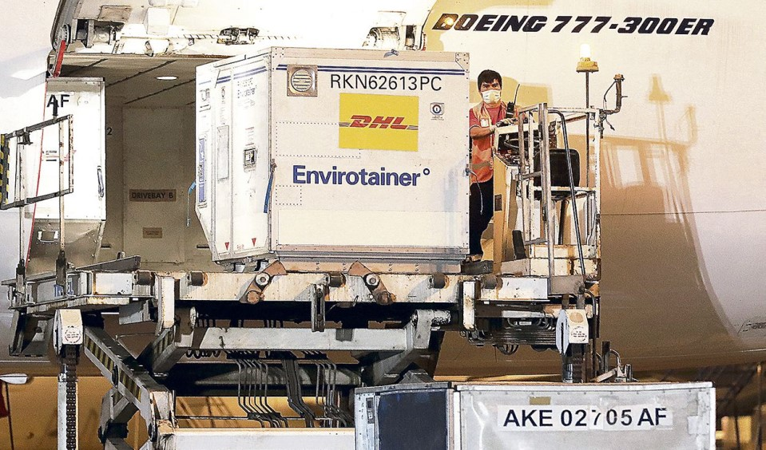

Sinopharm. Percy Mayta - Tristán señala que contracampaña que inició Willax con base en información errónea del biólogo Ernesto Buscamante afectó su adquisición. Entre marzo y abril debían llegar 5 millones de dosis.

Otros 2,5 millones de ciudadanos habrían podido ser vacunados en estos meses de no haber sido por la campaña de desinformación que realizó el canal Willax, el vacunagate y, en parte, por la falta de transparencia del laboratorio
Sinopharm , señala Percy Mayta-Tristán, director de Investigación de la Universidad Científica del Sur.
Esta campaña, como se sabe, la lideró el biólogo Ernesto Bustamante, asesor en temas de salud de la candidata presidencial
Keiko Fujimori.
Según el cronograma que había en febrero, Sinopharm planeaba enviar 2 millones de dosis en marzo y 3 millones en abril. “El Gobierno tenía un acuerdo de un millón y un preacuerdo de 37 millones. Y ese preacuerdo se paró con el vacunagate y la campaña”.
Mayta-Tristán dice que el informe preliminar difundido en Willax fue hecho de manera errónea. “Cuando (otros medios) nos consultaron a los especialistas, dijimos que la evidencia era que reducía hospitalizaciones y muertes, que es lo que se espera de una vacuna”.
Agrega que la falta de transparencia de Sinopharm también afectó el proceso de compra. “Tuvimos el
vacunagate y lo otro es que hasta la fecha no hay artículos publicados de su eficacia. Por eso, el informe de la
Organización Mundial de la Salud es importante porque conocemos esos resultados que antes no teníamos a la mano”.
Incluso, con la contracampaña en pie, de haber contado con la información de su eficacia para obtener el permiso de la Dirección General de Medicamentos, Insumos y Drogas (Digemid), el contrato hubiese continuado, manifiesta.
El investigador también señala que se han podido evitar muchas muertes y casos, y de esta forma se hubiera permitido una reactivación económica.
En cuanto a la efectividad del fármaco chino y la necesidad de una tercera dosis en el corto plazo, Mayta-Tristán señala que hablar de un “refuerzo” no significa que la vacuna no funcione. “Dado que los virus respiratorios mutan con mucha frecuencia, se requieren estos refuerzos”.
Y debido a que la vacunación en el mundo se inició en diciembre pasado, aún se desconoce en cuánto tiempo se necesitaría una tercera dosis.
“Lo que sí sabemos es que las vacunas son seguras y funcionan. Pero debemos tener claro que los virus mutan y por eso conocemos las variantes. Si nos ponemos a pensar en cómo funcionan en el tema de enfermedades respiratorias en adultos mayores, a ellos se les vacuna cada año o dos años contra la influenza. Eso más o menos pasaría con el covid”, dijo a La República.
Cabe recordar que un reciente estudio hecho por el Colegio Médico del Perú (CMP) y la Universidad Científica del Sur demostró que la cantidad de médicos que se hospitalizan o fallecen por Covid-19 disminuyó drásticamente tras haber sido inmunizados.
Este hallazgo se ratifica con la reciente evaluación que hizo la OMS de la información de ensayos clínicos que entregó Sinopharm.
La OMS consideró que las dosis del laboratorio chino son eficaces para prevenir la enfermedad en adultos entre los 18 y 59 años. En tanto, en el caso de los mayores de 60 años, la efectividad del fármaco llegaría hasta un 91%.
50 mil dosis
Más dosis. Fuentes del Ministerio de Salud señalaron anoche que el Centro Nacional de Abastecimiento de Recursos Estratégicos en Salud (Cenares) alista una solicitud de permiso excepcional ante Digemid que hará posible el ingreso de medio millón de dosis de Sinopharm que serán empleadas en el Plan Nacional de Vacunación.